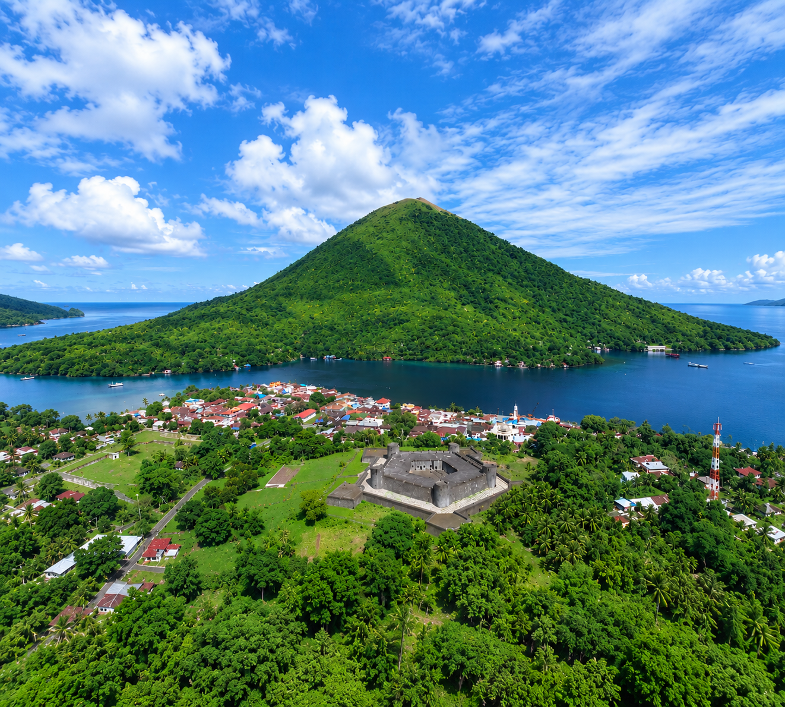
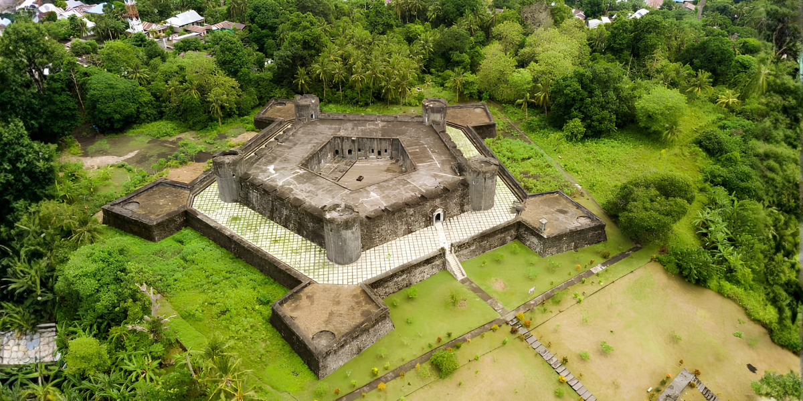
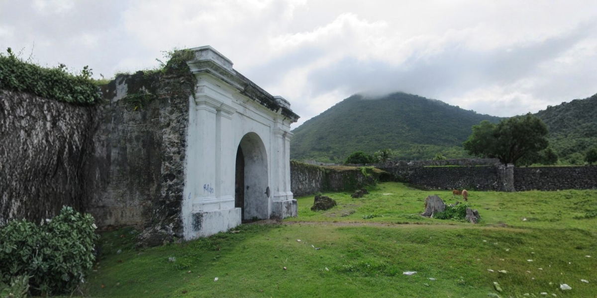
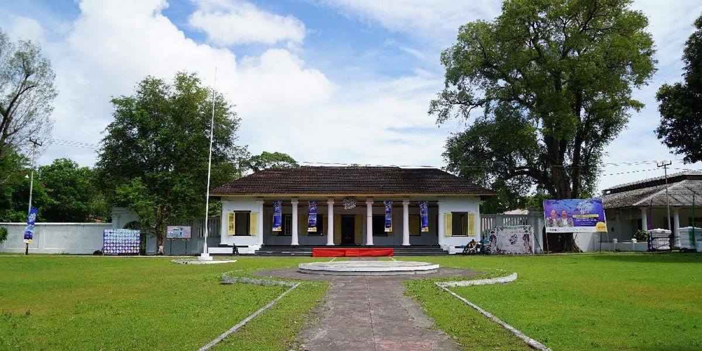
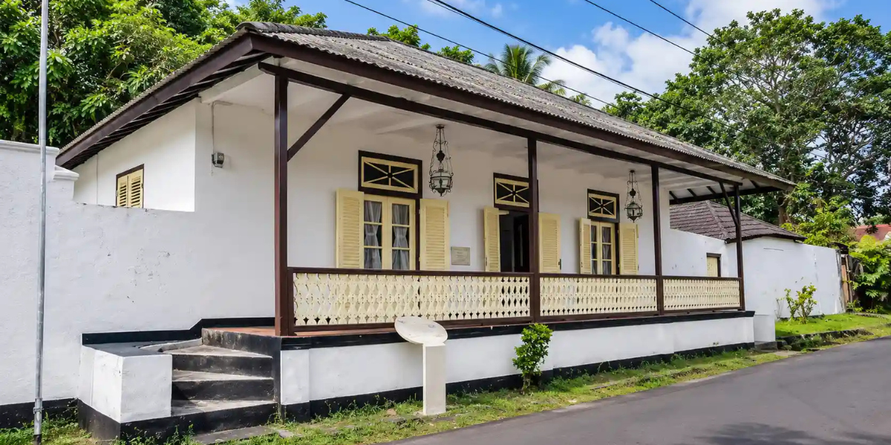
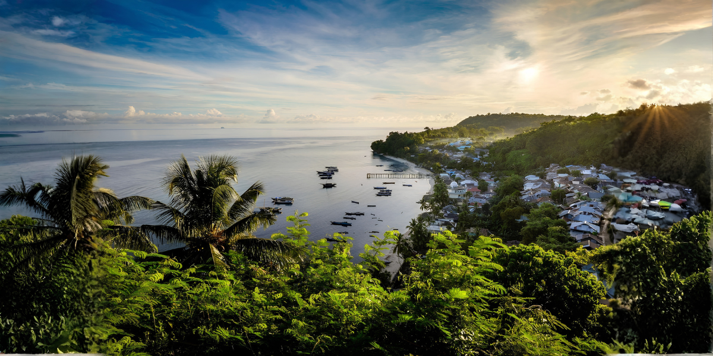
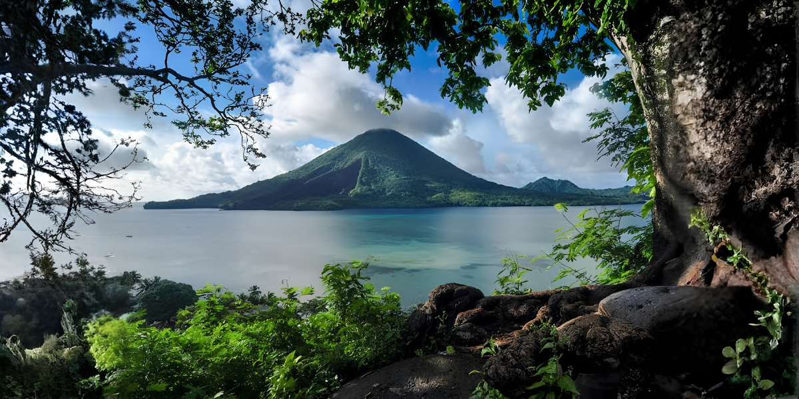

Archival Note“Melaka bought the spice, Banda grew it.” — Historic & Marine Landscape of the Banda
Islands

FORT BELGICA • MOUNT API4°31'S 129°54'E
Maluku Archipelago, Indonesia
17th-Century Pentagon Citadel Overlooking Banda Bay
Until 1850s
World's Sole Source
Exclusive origin of global nutmeg & mace
1667
Treaty of Breda
Run Island traded for Manhattan
1936–1942
Exile of Founders
Homes of Hatta & Sutan Sjahrir
Zero Crowds
Responsible Slow Travel
Community-first heritage conservation
01 — The Maritime Spice Story
“Melaka bought the spice, Banda grew it.”
Long before European caravels charted the eastern seas, the mineral-rich volcanic slopes of Banda Neira and its neighbouring islands nurtured the world's
only Myristica fragrans trees—yielding
prized nutmeg seeds and crimson mace.
Carried westward along monsoon maritime networks by Malay, Javanese, and Arab seafarers, Banda's harvest
converged at the bustling entrepôt of Melaka before
reaching Constantinople, Venice, and London—making this tiny volcanic archipelago the beating heart of
Asian trade history.
Interactive Maritime Route Explorer
Click any node to inspect trade dossier
Banda Neira: Sole Botanical Sanctuary of Nutmeg & Mace
Grown exclusively in shaded volcanic groves under towering kenari trees, Banda's nutmeg and crimson mace
commanded astronomical value—worth more than their weight in gold once they left Maluku shores.
USP 01 •
Botanical LegacyMyristica fragrans
Home of Nutmeg & Mace
Until the mid-19th century, the Banda Islands were the world's sole source of nutmeg and mace—shaping
global maritime exploration and culinary history.
USP 02 •
UNESCO
TentativeRef #6065
Preserved Colonial Heritage
Recognised on Indonesia's UNESCO Tentative List as the Historic and Marine Landscape of the Banda
Islands—featuring 17th-century pentagonal Fort Belgica and Istana Mini.
USP 03 •
National
Memory1936 – 1942
Founding-Figure Exile Sites
Walk inside the preserved residences where Indonesian founding fathers Mohammad Hatta and Sutan Sjahrir
lived, taught local children, and envisioned an independent nation.
02 — Chronology of the Spice Islands
Five centuries on one island
Pre-1500s
Indigenous Banda & Asian Spice Merchants
Asian
Trade
Banda's indigenous orang kaya (community leaders) harvest wild nutmeg and mace, trading peacefully with
Malay, Javanese, Chinese, and Arab merchants who sail the monsoon winds to Melaka.
1512
First European Arrival
Exploration
Following the capture of Melaka in 1511, Portuguese navigators guided by Malay pilots reach the Banda
Islands—becoming the first Europeans to set eyes on the fabled source of nutmeg.
1609–1611
Fort Nassau & Fort Belgica
Architecture
The Dutch East India Company (VOC) erects waterfront Fort Nassau and monumental pentagonal Fort Belgica on
the ridge above Neira harbour to command the sea lanes and enforce the spice monopoly.
1667
The Treaty of Breda
World
Geopolitics
Under the Treaty of Breda, the English cede tiny nutmeg-rich Pulau Run (Run Island) to the Dutch in
exchange for a remote North American island then called New Amsterdam—today's Manhattan.
1936–1942
Exile of Hatta & Sjahrir
Independence
Exiled by colonial authorities, Indonesian independence leaders Mohammad Hatta and Sutan Sjahrir spend six
formative years in Banda Neira—writing political essays and establishing free schools for local youth.
2026
Visit Indonesia: Truly Asia 2026
Current Era
Reintroducing Banda Neira as Southeast Asia's premier slow-heritage destination—connecting pan-Asian
travellers directly with local guides, family homestays, and nutmeg farmers without mass tourism.
03 — Interactive Topographic Chart
Island by island
Select any island pin on the Banda Sea chart to inspect its distance from Neira, historical significance,
and signature expedition experiences.
The cultural and administrative heart of the archipelago. Every landmark—from pentagonal Fort Belgica and
waterfront Fort Nassau to Istana Mini and the exile houses of Hatta and Sjahrir—lies within a serene,
walkable harbour town.
From monumental 17th-century bastions to quiet colonial verandas and coral gardens—inspect each historical
dossier before you walk the ground.

01 •
CitadelBuilt 1611
Pentagonal VOC Fortress
Fort
Belgica
Crowning the ridge above Banda Neira, this remarkably preserved five-sided stone fortress commands
panoramic views across Banda Bay and Mount Api.

02 •
HarbourBuilt 1609
First Dutch Coastal Bastion
Fort
Nassau
Constructed atop earlier Portuguese foundations along the waterfront, Fort Nassau guarded the anchorage
where spice galleons loaded nutmeg and mace.

03 •
ArchitectureColonial Era
Governor's Neoclassical Residence
Istana
Mini (Mini Palace)
Inspired by the Bogor Palace, this columned colonial residence served as the administrative seat of the
Banda Islands with sweeping marble verandas.

04 •
Independence1936–1942
Preserved Exile Residences
Hatta
& Sjahrir Exile Houses
Step inside the quiet study rooms, antique typewriters, and bookshelves where two architects of
Indonesian independence lived and taught for six years.

05 • Outer
IslandTreaty of 1667
The Island Traded for Manhattan
Run
Island (Pulau Run)
A tiny, tranquil coral-fringed island at the centre of 17th-century Anglo-Dutch spice rivalry—proof that
a small place can alter world maps.

06 •
Nature656m Elevation
Volcanic Peak & Lava-Flow Reefs
Mount Api
& Marine Nature
The symmetrical volcanic cone that defines Banda's skyline, flanked by crystal-clear waters where
vibrant hard corals thrive atop 1988 lava flows.
05 — Slow-Travel Pacing
Four days that make sense
Designed around unhurried walking distances, calm morning crossings, and meaningful encounters with Banda's
custodians.
Day 01 • On Foot Around Neira Town
Arrival by Sea & Sunset on the Bastions
Logistics: 100% Walkable • Local Historian Guide
Morning
Harbour Welcome & Homestay Check-in
Arrive at Banda Neira port with Mount Api rising directly across the channel. Settle into a family-run
heritage homestay and enjoy freshly brewed Banda nutmeg coffee.
Afternoon
Fort Nassau & Istana Mini Walk
Stroll past waterfront Fort Nassau, the old Dutch church, and Istana Mini's marble colonnade while tracing
the 17th-century Asian spice trade links to Melaka.
Evening
Golden Hour at Fort Belgica
Ascend the stone ramparts of pentagonal Fort Belgica as the sun dips behind Mount Api, followed by a
traditional Bandanese spiced seafood dinner.
06 — Curated Expedition Tiers
Choose your journey
Every tier directly supports Banda's local homestay hosts, boat captains, guides, and nutmeg growers.
Note: Final rates confirmed with local Banda operators before launch
Tier 01 • BudgetSlow Travel
Heritage Walker
Best for independent culture seekers
An intimate, low-footprint stay focused on Banda Neira's walkable historic quarter, local hospitality, and
authentic home cooking.
✓Family-run Banda Neira heritage homestay
✓Walkable Fort Belgica, Nassau & exile house trails
✓Local nutmeg jam & spice culinary tasting
✓Harbour arrival & departure coordination
Starting FromRate TBC (Operator)
Most Chosen
Tier 02 • Mid-RangeComplete Story
Spice Route Explorer
Best for history & photography travellers
Our signature guided expedition combining heritage guesthouse comfort, historian storytelling, nutmeg
groves, and a voyage to Run Island.
✓Colonial-style heritage guesthouse accommodation
✓Accredited local historian & heritage guide
✓Lonthoir nutmeg plantation & farmer visit
✓Full-day boat excursion to Pulau Run & snorkelling
Starting FromRate TBC (Operator)
Tier 03 • PremiumPrivate &
Dive
Archipelago Private Expedition
Best for divers & private explorers
Bespoke private boat charters across outer coral atolls, guided scuba diving over volcanic walls, and
curated evening heritage sessions.
✓Boutique waterfront heritage stay with bay views
✓Private boat island-hopping (Run, Ai & Hatta)
✓Guided coral reef diving & lava-flow snorkelling
✓Private historical curator & sunset dining
Starting FromRate TBC (Operator)
07 — Journey Logistics & Stewardship
Far away, and part of the story
Reaching Banda Neira requires intention—protecting the island from mass tourism and rewarding travellers with
unspoiled authenticity.
01Departure
Home City
Fly from Jakarta, Kuala Lumpur, Singapore, or regional Asian hubs toward eastern Indonesia.
02Gateway
Ambon (AMQ)
Arrive at Pattimura Airport in Ambon, the maritime gateway to the Maluku islands.
03Sea / Air
Banda Neira
Connect via fast ferry, Pelni ship, or pioneer aircraft from Ambon (always verify seasonal operator
schedules).
04Explore
Day Trips
Walk the forts on foot and board traditional wooden boats to Run Island, Lonthoir, and Mount Api.
Good to Know •
01
Best Season
March–April and October–November offer the calmest Banda Sea crossings,
crystalline underwater visibility, and clear views of Mount Api.
Good to Know •
02
Volcano & Sea Safety
Mount Api is an active volcano and outer channels carry strong currents. Always climb and dive with licensed
local Banda guides and check marine advisories.
Good to Know •
03
Respect Local Communities
We champion zero mass tourism: dress modestly in villages, never touch living coral reefs, and purchase
nutmeg directly from local family growers.
Visit Indonesia 2026Truly Asia 2026
Small island, giant history. Ready when you are.
Share your preferred travel window and journey tier. Our Banda Neira local coordinator team will prepare a
tailored itinerary, seasonal Ambon transfer options, and confirmed community operator rates.
Your expedition request for Pulau Kecil, Sejarah Raksasa has
been logged. Our local Banda Neira heritage desk will reach out to with confirmed Ambon ferry/flight schedules and operator rates.
DEPARTURE HUB
TRAVEL WINDOW
SELECTED JOURNEY TIER
Historical Dossier
Landmark Title
Subtitle
Visitor & Stewardship Tip
4°31'S 129°54'E
Integrated Advertising Deliverables
Gems in Banda Neira — Campaign Ecosystem
Unified visual identity across Instagram (@gemsinbandaneira), storytelling email dispatch, and sustainable
souvenir merchandise.
@gemsinbandaneira
Open Trip Schedule 2026
19 – 23 December 2026
Meeting Point: Banda Neira Port
Caption: READY FOR THE ULTIMATE ESCAPE? Tracing historical footsteps and the natural
charm of Banda Neira.
Instagram Single Post Series
Email Subject Line
Plan your trip to Banda Neira
The island where Melaka's spice story began
Long before nutmeg reached the markets of Melaka, it grew on one small island: Banda Neira. Walk the
same ground across History, Nature & Community.
Direct Storytelling EDM
Offline Presence
Eco-Souvenir Collection
Tumbler • Keychain • Canvas Tote
Plastic-free travel gear carrying the island's story home.


.jpg?width=1000)